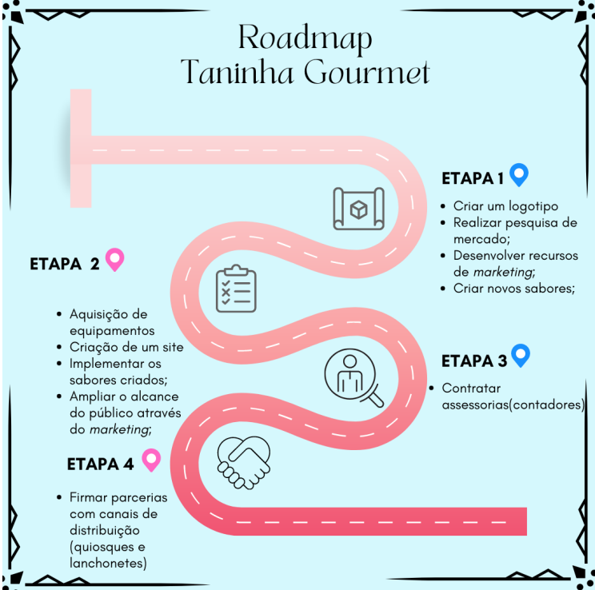
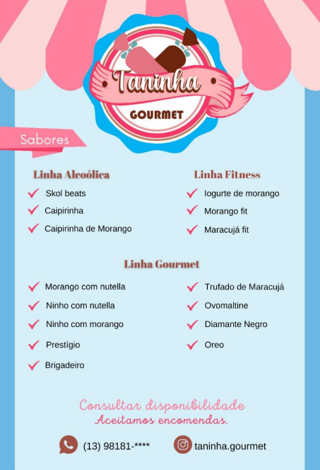
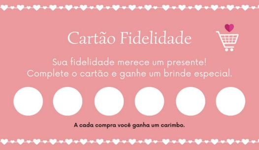
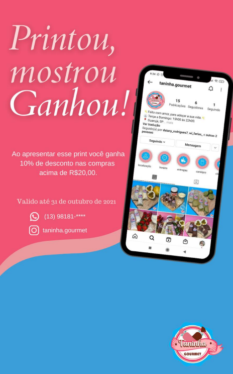

Rodmap
Objetivando um melhor posicionamento e conquista de mercado, a empresa Taninha Gourmet fará uso de determinados meios que serão utilizados visando maior alcance de seu público-alvo através da divulgação aos potenciais consumidores, de forma a buscar sempre por uma propagação positiva para as negociações da empresa. A seguir, podemos observar algumas maneiras utilizadas pela empresa para manter uma vantagem competitiva sustentável:
Flyer virtual
Projetado para promover de forma atrativa a divulgação dos produtos, apresentando informações essenciais para contato e os sabores produzidos, de maneira atrativa. Deste modo, será utilizado também para caracterizar melhor o produto disponibilizado pelo empreendimento, buscando assim chamar atenção do consumidor. Considerando também o lado ecológico, o flyer será produzido de forma digital, para ser utilizado somente no meio virtual, evitando descarte indevido
Cartão fidelidade
Projetado para proporcionar maior proximidade com os clientes, conterá informações voltadas ao empreendimento, seus meios de contato e imagem do produto, onde possibilitará que, realizando sua compra, o cartãozinho seja marcado em um de seus campos disponíveis e, após o preenchimento de todos os 06 campos, o cliente seja beneficiado com um produto gratuito (de acordo com as regras estabelecidas pela empresa).
Post Relâmpago
projetado com o intuito de chamar atenção do cliente de forma tal a sempre mantê-lo atento às novidades do empreendimento. O mesmo apresentará o logo da marca, bem como informações para contato, além de uma mensagem específica que expressará que a postagem disponibiliza um cupom de tempo limitado, oferecendo desconto ou qualquer outra forma de bonificação considerada pela organização.
